4 Наглядное доказательство того, что нейронные сети могут вычислить любую функцию
Один из самых поразительных фактов о нейронных сетях — то, что они могут вычислить вообще любую функцию. Предположим, кто-то даёт вам сложную, извилистую функцию \(f(x)\):
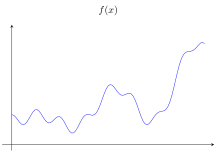
Какой бы ни была функция, гарантированно существует нейронная сеть, которая для любого возможного входа \(x\) выдаёт значение \(f(x)\) (или достаточно близкое к нему приближение), например:
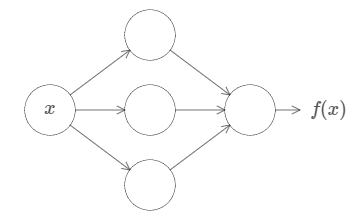
Этот результат верен, даже если у функции много входов, \(f=f(x_1,\ldots,x_m)\), и много выходов. Например, вот сеть, вычисляющая функцию с \(m=3\) входами и \(n=2\) выходами:
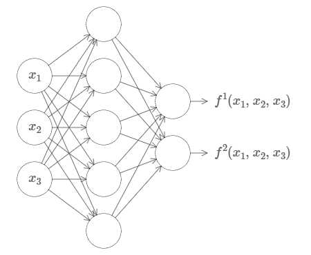
Этот результат говорит о том, что нейронные сети обладают своего рода универсальностью. Какую бы функцию мы ни хотели вычислить, мы знаем, что существует нейронная сеть, способная это сделать.
Более того, эта теорема об универсальности верна, даже если ограничиться сетями всего с одним слоем между входными и выходными нейронами — так называемым единственным скрытым слоем. Так что даже очень простые архитектуры сетей могут быть исключительно мощными.
Теорема об универсальности хорошо известна тем, кто работает с нейронными сетями. Но почему она верна, понимают не так широко. Большинство доступных объяснений довольно технические. Например, в одной из первых статей, доказавших этот результат1, использовались теорема Хана — Банаха, теорема Рисса о представлении и некоторые методы анализа Фурье. Математику следить за этим рассуждением нетрудно, но большинству людей это не так легко. Жаль, потому что глубинные причины универсальности просты и красивы.
В этой главе я даю простое и в основном наглядное объяснение теоремы об универсальности. Мы шаг за шагом пройдём через лежащие в её основе идеи. Вы поймёте, почему нейронные сети действительно могут вычислить любую функцию. Поймёте некоторые ограничения этого результата. И поймёте, как он связан с глубокими нейронными сетями.
Чтобы следить за материалом главы, не обязательно читать предыдущие главы книги. Глава построена так, чтобы её можно было читать как самостоятельное эссе. Если у вас есть хотя бы небольшое базовое знакомство с нейронными сетями, вы сможете следить за объяснением. Впрочем, иногда я буду давать ссылки на предыдущий материал, чтобы помочь восполнить возможные пробелы в знаниях.
Теоремы об универсальности — обычное дело в информатике, настолько, что мы порой забываем, насколько они поразительны. Но стоит напомнить себе: способность вычислять произвольную функцию — нечто действительно замечательное. Почти любой процесс, какой только можно вообразить, можно рассматривать как вычисление функции. Возьмём задачу определить название музыкального произведения по короткому фрагменту. Это можно рассматривать как вычисление функции. Или задачу перевода китайского текста на английский. И это можно рассматривать как вычисление функции2. Или задачу взять видеофайл в формате mp4 и сгенерировать описание сюжета фильма и обсуждение качества актёрской игры. И это тоже можно рассматривать как своего рода вычисление функции3 Универсальность означает, что в принципе нейронные сети могут делать всё это и многое другое.
Конечно, из того, что мы знаем о существовании нейронной сети, способной (скажем) переводить китайский текст на английский, не следует, что у нас есть хорошие методы построения такой сети или хотя бы её распознавания. Это ограничение касается и традиционных теорем об универсальности для моделей вроде булевых схем. Но, как мы видели ранее в книге, для нейронных сетей существуют мощные алгоритмы обучения функциям. Сочетание «алгоритмы обучения + универсальность» весьма привлекательно. До сих пор книга была сосредоточена на алгоритмах обучения. В этой главе мы сосредоточимся на универсальности и её значении.
4.1 Две оговорки
Прежде чем объяснять, почему теорема об универсальности верна, хочу сделать две оговорки к неформальному утверждению «нейронная сеть может вычислить любую функцию».
Во-первых, это не значит, что сеть может вычислить любую функцию точно. Скорее, можно получить приближение настолько хорошее, насколько нужно. Увеличивая число скрытых нейронов, приближение можно улучшить. Например, выше (см. [basic_network_precursor]) я показал сеть, вычисляющую некоторую функцию \(f(x)\) с помощью трёх скрытых нейронов. Для большинства функций с тремя скрытыми нейронами удастся получить лишь грубое приближение. Увеличив число скрытых нейронов (скажем, до пяти), обычно можно получить приближение получше:
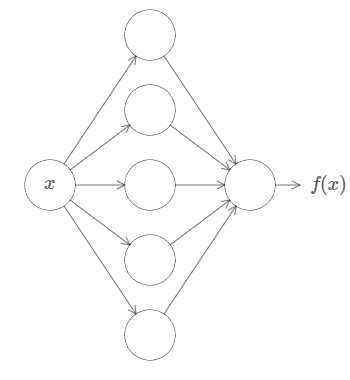
А ещё дальше увеличивая число скрытых нейронов, можно добиться ещё лучшего результата.
Уточним это утверждение. Пусть нам дана функция \(f(x)\), которую мы хотим вычислить с некоторой нужной точностью \(\epsilon>0\). Гарантия состоит в том, что, используя достаточно много скрытых нейронов, всегда можно найти нейронную сеть, выход которой \(g(x)\) удовлетворяет условию \(|g(x)-f(x)|<\epsilon\) для всех входов \(x\). Иными словами, приближение будет иметь нужную точность для любого возможного входа.
Вторая оговорка: функции, которые можно приблизить описанным способом, — это непрерывные функции. Если функция разрывна, то есть совершает внезапные резкие скачки, то в общем случае приблизить её нейронной сетью не получится. Это неудивительно, поскольку наши нейронные сети вычисляют непрерывные функции своих входов. Однако даже если функция, которую мы на самом деле хотим вычислить, разрывна, часто бывает достаточно непрерывного приближения. В таком случае можно использовать нейронную сеть. На практике это обычно не является серьёзным ограничением.
Итак, более точная формулировка теоремы об универсальности такова: нейронные сети с одним скрытым слоем позволяют приблизить любую непрерывную функцию с любой нужной точностью. В этой главе мы на самом деле докажем чуть более слабую версию этого результата — с двумя скрытыми слоями вместо одного. В задачах я кратко опишу, как с небольшими изменениями приспособить объяснение, чтобы получить доказательство с одним скрытым слоем.
4.2 Универсальность для одного входа и одного выхода
Чтобы понять, почему теорема об универсальности верна, начнём с того, как построить нейронную сеть, приближающую функцию всего с одним входом и одним выходом:
Оказывается, в этом и состоит суть задачи универсальности. Разобравшись с этим частным случаем, довольно легко распространить результат на функции со многими входами и многими выходами.
Чтобы понять, как построить сеть для вычисления \(f\), начнём с сети, содержащей единственный скрытый слой с двумя скрытыми нейронами и выходной слой с одним выходным нейроном:
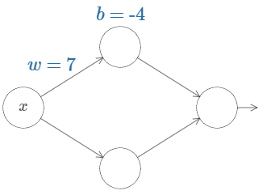
Чтобы прочувствовать, как работают части сети, сосредоточимся на верхнем скрытом нейроне. В онлайн-версии книги на схеме можно щёлкнуть по весу \(w\) и немного потянуть мышью вправо, увеличивая \(w\), — и сразу видно, как меняется функция, вычисляемая верхним скрытым нейроном. Здесь несколько таких состояний показано на графиках:
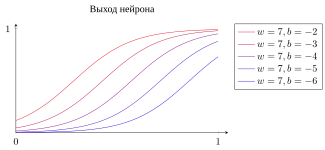
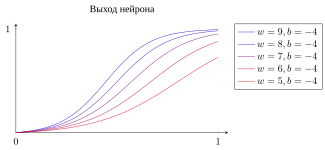
Как мы узнали ранее в книге, скрытый нейрон вычисляет \(\sigma(wx+b)\), где \(\sigma(z)\equiv1/(1+e^{-z})\) — сигмоида. До сих пор мы часто пользовались этой алгебраической формой. Но для доказательства универсальности мы лучше поймём суть, если полностью отвлечёмся от алгебры и будем вместо этого менять и наблюдать форму кривой на графике. Это не только поможет лучше прочувствовать происходящее, но и даст доказательство4 универсальности, применимое и к функциям активации, отличным от сигмоиды. Анализ можно сильно упростить, увеличив вес настолько, что выход с очень хорошей точностью станет ступенчатой функцией. Ниже показан выход верхнего скрытого нейрона при весе \(w=999\).
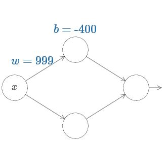
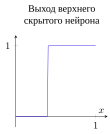
Со ступенчатыми функциями работать гораздо проще, чем с сигмоидами общего вида. Причина в том, что в выходном слое складываются вклады всех скрытых нейронов. Сумму набора ступенчатых функций проанализировать легко, а рассуждать о том, что получается при сложении набора сигмоидных кривых, гораздо труднее. Поэтому всё сильно упрощается, если считать, что скрытые нейроны выдают ступенчатые функции. Конкретнее, мы фиксируем вес \(w\) на каком-то очень большом значении, а положение ступеньки задаём изменением смещения. Конечно, считать выход ступенчатой функцией — приближение, но очень хорошее, и пока мы будем считать его точным. Позже я вернусь к тому, как сказываются отклонения от этого приближения.
При каком значении \(x\) происходит ступенька? Иначе говоря, как положение ступеньки зависит от веса и смещения?
Чтобы ответить на этот вопрос, попробуйте менять вес и смещение на схеме выше (в онлайн-версии; возможно, придётся немного прокрутить назад). Можете ли вы понять, как положение ступеньки зависит от \(w\) и \(b\)? Немного потрудившись, можно убедиться, что положение ступеньки пропорционально \(b\) и обратно пропорционально \(w\).
На самом деле ступенька находится в точке \(s=-b/w\), в чём можно убедиться, меняя вес и смещение на следующей схеме:
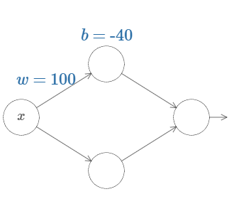
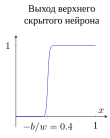
Жизнь сильно упростится, если описывать скрытые нейроны всего одним параметром \(s\) — положением ступеньки, \(s=-b/w\). Чтобы привыкнуть к новой параметризации, попробуйте менять \(s\) на следующей схеме:
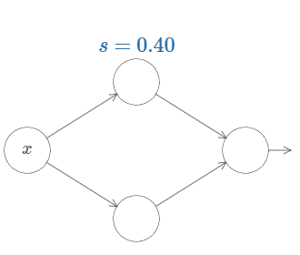
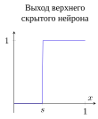
Как отмечалось выше, мы неявно задали вес \(w\) на входе каким-то большим значением — достаточно большим, чтобы ступенчатая функция была очень хорошим приближением. Нейрон, параметризованный таким образом, легко перевести обратно в обычную модель, выбрав смещение \(b=-ws\).
До сих пор мы смотрели только на выход верхнего скрытого нейрона. Посмотрим теперь на поведение всей сети. А именно, предположим, что скрытые нейроны вычисляют ступенчатые функции с точками ступенек \(s_1\) (верхний нейрон) и \(s_2\) (нижний нейрон). И пусть их выходные веса равны соответственно \(w_1\) и \(w_2\). Вот эта сеть:
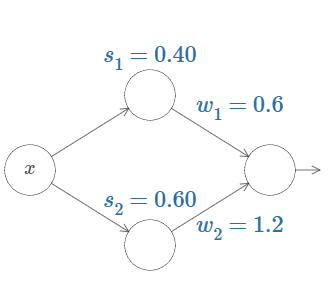
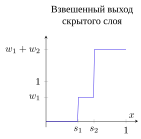
Справа показан взвешенный выход скрытого слоя \(w_1a_1+w_2a_2\). Здесь \(a_1\) и \(a_2\) — выходы верхнего и нижнего скрытых нейронов соответственно5. Эти выходы обозначены буквой a, поскольку их часто называют активациями нейронов.
Попробуйте увеличивать и уменьшать точку ступеньки \(s_1\) верхнего скрытого нейрона. Прочувствуйте, как это меняет взвешенный выход скрытого слоя. Особенно стоит разобраться, что происходит, когда \(s_1\) переходит за \(s_2\). Вы увидите, что при этом график меняет форму, поскольку мы переходим от ситуации, когда первым активируется верхний скрытый нейрон, к ситуации, когда первым активируется нижний.
Аналогично попробуйте менять точку ступеньки \(s_2\) нижнего скрытого нейрона и прочувствуйте, как это меняет совокупный выход скрытых нейронов.
Попробуйте увеличивать и уменьшать каждый из выходных весов. Заметьте, как это масштабирует вклад соответствующего скрытого нейрона. Что происходит, когда один из весов равен нулю?
Наконец, задайте \(w_1\) равным 0.8, а \(w_2\) — равным −0.8. Получится функция-«выступ», которая начинается в точке \(s_1\), заканчивается в точке \(s_2\) и имеет высоту 0.8. Например, взвешенный выход может выглядеть так:
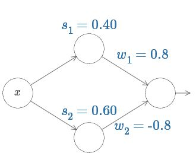
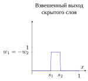
Конечно, высоту выступа можно сделать какой угодно. Будем обозначать высоту одним параметром \(h\). Чтобы не загромождать схему, я также уберу обозначения «\(s_1=\ldots\)» и «\(w_1=\ldots\)».
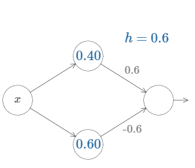
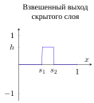
Попробуйте увеличивать и уменьшать значение \(h\) и посмотрите, как меняется высота выступа. Сделайте высоту отрицательной и понаблюдайте, что произойдёт. И попробуйте менять точки ступенек, чтобы увидеть, как это меняет форму выступа.
Кстати, вы заметите, что мы используем нейроны так, что об этом можно
думать не только графически, но и в более привычных программистских
терминах — как о своего рода операторе if-then-else,
например:
if input >= step point:
add 1 to the weighted output
else:
add 0 to the weighted output(то есть «если вход не меньше точки ступеньки, прибавить 1 к
взвешенному выходу, иначе прибавить 0»). По большей части я буду
придерживаться графической точки зрения. Но дальше вам иногда может быть
полезно переключиться и думать в терминах if-then-else.
С помощью нашего трюка с выступами можно получить два выступа, объединив в одной сети две пары скрытых нейронов:
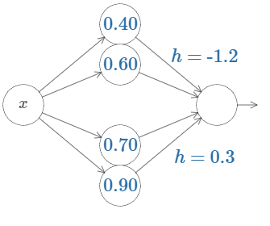
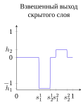
Веса я здесь не показываю, а просто пишу значения \(h\) для каждой пары скрытых нейронов. Попробуйте увеличивать и уменьшать оба значения \(h\) и посмотрите, как меняется график. Передвигайте выступы, меняя точки ступенек.
В общем случае эта идея позволяет получить сколько угодно пиков любой высоты. А именно, можно разбить отрезок [0,1] на большое число \(N\) подотрезков и с помощью \(N\) пар скрытых нейронов построить пики любой нужной высоты. Посмотрим, как это работает при \(N=5\). Нейронов уже довольно много, так что я размещу их потеснее. Извините за сложность схемы: можно было бы спрятать сложность за дальнейшими абстракциями, но, думаю, стоит потерпеть немного сложности, чтобы конкретнее прочувствовать, как работают такие сети.
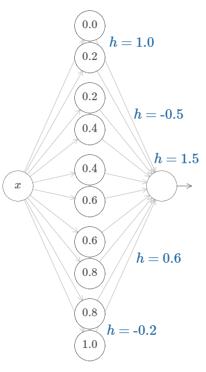
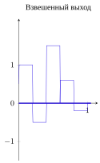
Видно, что здесь пять пар скрытых нейронов. Точки ступенек соответствующих пар нейронов — \(0,1/5\), затем \(1/5,2/5\) и так далее до \(4/5,5/5\). Эти значения фиксированы — благодаря им на графике получаются пять равномерно расположенных выступов.
С каждой парой нейронов связано значение \(h\). Помните, что исходящие из нейронов связи имеют веса \(h\) и \(-h\) (не отмечены). В онлайн-версии можно щёлкнуть по одному из значений \(h\) и потянуть мышью вправо или влево, меняя значение, и следить, как меняется функция. Меняя выходные веса, мы фактически конструируем функцию!
И наоборот, можно щёлкнуть по графику и тянуть вверх или вниз, меняя высоту любого из выступов. При изменении высот видно соответствующее изменение значений \(h\). И, хотя это не показано, меняются и соответствующие выходные веса, равные \(+h\) и \(-h\).
Иными словами, мы можем напрямую управлять функцией на графике справа и видеть, как это отражается на значениях \(h\) слева. Забавно зажать кнопку мыши и провести ею от одного края графика к другому. При этом вы рисуете функцию и наблюдаете, как к ней подстраиваются параметры нейронной сети.
Пора бросить вызов.
Вспомним функцию, которую я изобразил в начале главы:
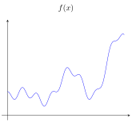
Тогда я этого не сказал, но на самом деле это функция \[f(x)=0.2+0.4x^2+0.3x\sin(15x)+0.05\cos(50x),\tag{113}\label{eq:113}\] построенная для \(x\) от 0 до 1, причём по оси \(y\) значения тоже лежат от 0 до 1.
Очевидно, это нетривиальная функция.
Вам предстоит придумать, как вычислить её с помощью нейронной сети.
В сетях выше мы анализировали взвешенную комбинацию \(\sum_jw_ja_j\), которую выдают скрытые нейроны. Теперь мы умеем хорошо управлять этой величиной. Но, как я отмечал раньше, это не выход сети. Выход сети равен \(\sigma\left(\sum_jw_ja_j+b\right)\), где \(b\) — смещение выходного нейрона. Можно ли как-то управлять настоящим выходом сети?
Решение — построить нейронную сеть, скрытый слой которой имеет взвешенный выход \(\sigma^{-1} \circ f(x)\), где \(\sigma^{-1}\) — просто функция, обратная к \(\sigma\). То есть мы хотим, чтобы взвешенный выход скрытого слоя был таким:
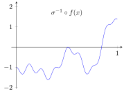
Если это удастся, то выход сети в целом будет хорошим приближением к \(f(x)\)6.
Итак, ваша задача — построить нейронную сеть, приближающую показанную выше целевую функцию. Чтобы извлечь как можно больше пользы, я хочу, чтобы вы решили задачу дважды. В первый раз щёлкайте прямо по графику, непосредственно подстраивая высоты отдельных выступов. Добиться хорошего совпадения с целевой функцией должно быть довольно легко. Качество измеряется средним отклонением между целевой функцией и функцией, которую на самом деле вычисляет сеть. Ваша задача — сделать среднее отклонение как можно меньше. Задача решена, когда среднее отклонение снижено до 0.40 или ниже7
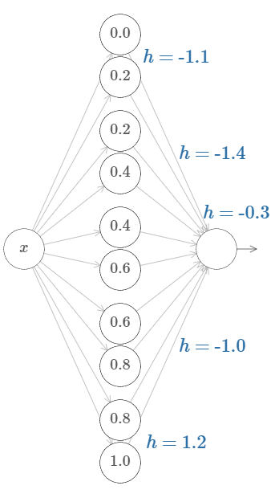
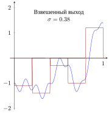
Теперь вы нашли все элементы, необходимые сети, чтобы приближённо вычислить функцию \(f(x)\)! Это лишь грубое приближение, но его легко можно сильно улучшить, просто увеличив число пар скрытых нейронов и тем самым число выступов.
В частности, все найденные данные легко перевести обратно в стандартную параметризацию нейронных сетей. Кратко напомню, как это делается.
Все веса первого слоя имеют одно и то же большое значение, скажем, \(w=1000\).
Смещения скрытых нейронов равны просто \(b=-ws\). Например, для второго скрытого нейрона \(s=0.2\) превращается в \(b=-1000\times0.2=-200\).
Веса последнего слоя определяются значениями \(h\). Например, выбранное выше значение первого \(h\), \(h= -0.6\), означает, что выходные веса двух верхних скрытых нейронов равны соответственно \(-0.6\) и 0.6. И так далее для всего слоя выходных весов.
Наконец, смещение выходного нейрона равно 0.
Вот и всё: у нас есть полное описание нейронной сети, которая весьма неплохо вычисляет исходную целевую функцию. И мы понимаем, как улучшить качество приближения, увеличив число скрытых нейронов.
Более того, в исходной целевой функции \(f(x)=0.2+0.4x^2+0.3\sin(15x)+0.05\cos(50x)\) не было ничего особенного. Ту же процедуру можно было применить к любой непрерывной функции из \([0,1]\) в \([0,1]\). По сути, мы используем нейронные сети с одним слоем, чтобы построить для функции таблицу значений. И на этой идее мы сможем построить общее доказательство универсальности.
4.3 Много входных переменных
Распространим наши результаты на случай многих входных переменных. Звучит сложно, но все нужные идеи можно понять на случае всего двух входов. Так что займёмся случаем двух входов.
Начнём с того, что происходит, когда у нейрона два входа:
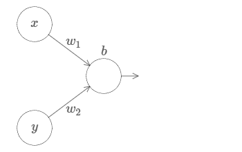
Здесь входы \(x\) и \(y\) с соответствующими весами \(w_1\) и \(w_2\), а также смещение нейрона \(b\). Положим вес \(w_2\) равным 0 и поиграем с первым весом \(w_1\) и смещением \(b\), чтобы увидеть, как они влияют на выход нейрона:
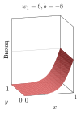
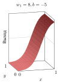
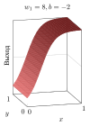
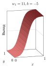
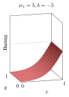
Как видите, при \(w_2=0\) вход \(y\) никак не влияет на выход нейрона. Всё выглядит так, будто \(x\) — единственный вход.
Учитывая это, как вы думаете, что произойдёт, если увеличить вес \(w_1\) до \(w_1=100\), оставив \(w_2\) равным 0? Если ответ не очевиден сразу, немного поразмыслите и попробуйте понять, что произойдёт. Затем проверьте, правы ли вы. В онлайн-версии книги то, что происходит, показано в видеоролике.
Как и в предыдущем обсуждении, по мере роста входного веса выход приближается к ступенчатой функции. Разница в том, что теперь ступенчатая функция трёхмерная. И, как прежде, положение ступеньки можно перемещать, меняя смещение. Фактическое положение ступеньки — \(s_x\equiv-b/w_1\).
Повторим всё это, взяв в качестве параметра положение ступеньки:
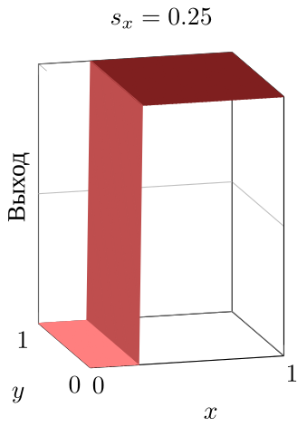
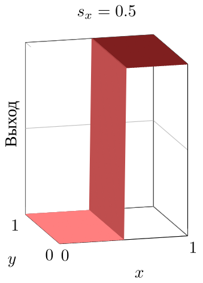
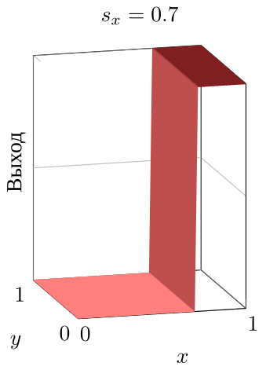
Здесь мы предполагаем, что вес входа \(x\) имеет какое-то большое значение — я использовал \(w_1=1000\), — а вес \(w_2=0\). Число на нейроне — точка ступеньки, а маленький \(x\) над числом напоминает, что ступенька идёт в направлении \(x\). Конечно, можно получить и ступенчатую функцию в направлении \(y\), сделав вес входа \(y\) очень большим (скажем, \(w_2=1000\)), а вес входа \(x\) равным 0, то есть \(w_1=0\):
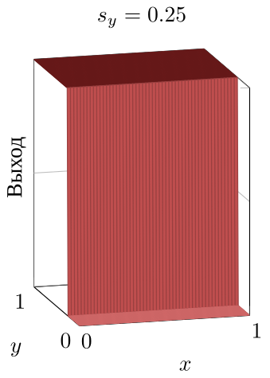
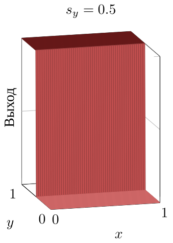
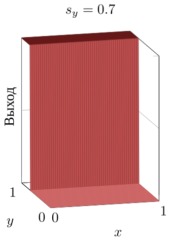
Число на нейроне — снова точка ступеньки, а маленький \(y\) над числом на этот раз напоминает, что ступенька идёт в направлении \(y\). Я мог бы явно отметить веса входов \(x\) и \(y\), но решил этого не делать, чтобы не загромождать схему. Но помните, что маленькая пометка \(y\) неявно говорит нам, что вес входа \(y\) велик, а вес входа \(x\) равен 0.
С помощью только что построенных ступенчатых функций можно вычислить трёхмерную функцию-выступ. Для этого используем два нейрона, каждый из которых вычисляет ступенчатую функцию в направлении \(x\). Затем объединяем эти ступенчатые функции с весами \(h\) и \(-h\) соответственно, где \(h\) — нужная высота выступа. Всё это показано на следующей схеме:
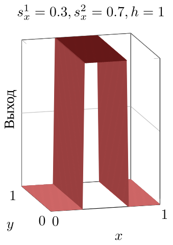
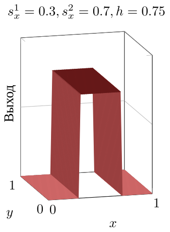
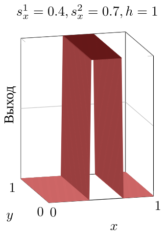
Попробуйте менять значение высоты h. Понаблюдайте, как оно связано с весами сети. И посмотрите, как оно меняет высоту функции-выступа справа.
Попробуйте также менять точку ступеньки 0.30 верхнего скрытого нейрона. Посмотрите, как это меняет форму выступа. Что происходит, когда она заходит за точку ступеньки 0.70 нижнего скрытого нейрона?
Мы разобрались, как сделать функцию-выступ в направлении \(x\). Разумеется, функцию-выступ в направлении \(y\) сделать так же легко — с помощью двух ступенчатых функций в направлении \(y\). Напомню: для этого вес входа \(y\) делается большим, а вес входа \(x\) — нулевым. Вот результат:
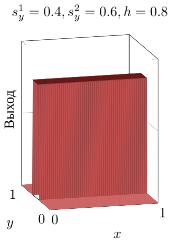
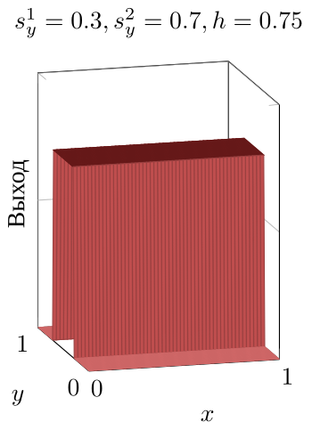
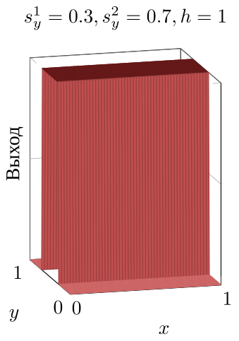
Это выглядит почти так же, как предыдущая сеть! Единственное явно показанное изменение — на скрытых нейронах теперь маленькие пометки \(y\). Они напоминают, что нейроны дают ступенчатые функции по \(y\), а не по \(x\), так что вес очень велик на входе \(y\) и равен нулю на входе \(x\), а не наоборот. Как и прежде, я решил не показывать этого явно, чтобы не загромождать схему. Посмотрим, что получится, если сложить две функции-выступа — одну в направлении \(x\), другую в направлении \(y\), обе высоты \(h\):
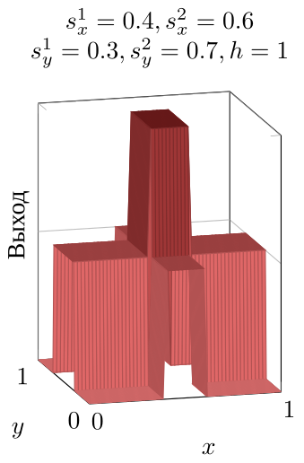
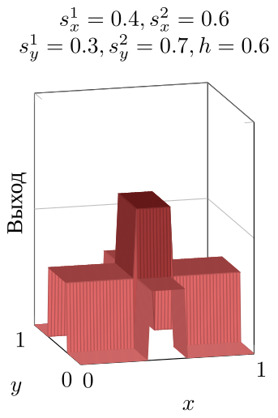
Чтобы упростить схему, я убрал связи с нулевыми весами. Пока я оставил маленькие пометки \(x\) и \(y\) на скрытых нейронах, чтобы напомнить, в каких направлениях вычисляются функции-выступы. Позже мы уберём и эти пометки, поскольку направление и так ясно по входной переменной. Попробуйте менять параметр \(h\). Как видите, при этом меняются выходные веса, а также высоты обеих функций-выступов — и по \(x\), и по \(y\). То, что мы построили, немного похоже на функцию-башню:
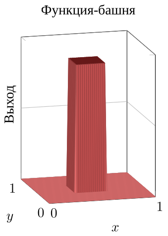
Если бы мы умели строить такие функции-башни, с их помощью можно было бы приближать произвольные функции, просто складывая много башен разной высоты в разных местах:
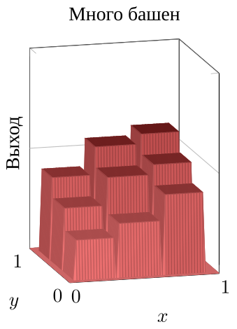
Конечно, мы ещё не разобрались, как построить функцию-башню. То, что мы построили, выглядит как центральная башня высотой \(2h\), окружённая плато высотой \(h\).
Но функцию-башню построить можно. Вспомните: раньше мы видели, что
нейроны можно использовать для реализации своего рода оператора
if-then-else:
if input >= threshold:
output 1
else:
output 0(«если вход не меньше порога, выдать 1, иначе выдать 0»). Это было для нейрона с одним входом. А мы хотим применить похожую идею к совокупному выходу скрытых нейронов:
if combined output from hidden neurons >= threshold:
output 1
else:
output 0(«если совокупный выход скрытых нейронов не меньше порога, выдать 1, иначе выдать 0»). Если подходящим образом выбрать порог — скажем, значение \(3h/2\), лежащее между высотой плато и высотой центральной башни, — можно «прижать» плато к нулю и оставить стоять только башню.
Понимаете, как это сделать? Чтобы разобраться, поэкспериментируйте со
следующей сетью. Заметьте, что теперь мы изображаем выход всей сети, а
не только взвешенный выход скрытого слоя. Это значит, что мы прибавляем
к взвешенному выходу скрытого слоя смещение и применяем сигмоиду. Можете
ли вы найти значения \(h\) и \(b\), дающие башню? Это немного хитро, так
что если вы подумали и всё ещё застряли, вот две подсказки: (1) чтобы
выходной нейрон вёл себя как нужный if-then-else, входные
веса (все равны \(h\) или \(-h\)) должны быть большими; (2) значение
\(b\) задаёт масштаб порога
if-then-else.
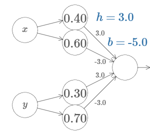
При исходных параметрах выход выглядит как сплющенная версия предыдущей схемы — с башней и плато. Чтобы получить нужное поведение, увеличим параметр \(h\), пока он не станет большим. Это даёт поведение порогового if-then-else. Затем, чтобы правильно задать порог, выберем \(b\approx-3h/2\). Попробуйте и посмотрите, как это работает!
Вот как это выглядит при \(h=10\):
Даже при этом сравнительно скромном значении \(h\) получается довольно хорошая функция-башня. И, конечно, её можно сделать сколь угодно хорошей, увеличивая \(h\) дальше и сохраняя смещение равным \(b=-3h/2\).
Попробуем объединить две такие сети, чтобы вычислить две разные функции-башни. Чтобы роли двух подсетей были понятны, я поместил их в отдельные прямоугольники ниже: каждый прямоугольник вычисляет функцию-башню описанным выше способом. График справа показывает взвешенный выход второго скрытого слоя, то есть взвешенную комбинацию функций-башен.
В частности, видно, что, меняя веса последнего слоя, можно менять высоту выходных башен.
Та же идея позволяет вычислить сколько угодно башен. Кроме того, их можно сделать сколь угодно узкими и любой высоты. В результате можно добиться, чтобы взвешенный выход второго скрытого слоя приближал любую нужную функцию двух переменных:
В частности, сделав взвешенный выход второго скрытого слоя хорошим приближением к \(\sigma^{-1}\circ f\), мы гарантируем, что выход сети будет хорошим приближением к любой нужной функции \(f\).
А как насчёт функций более чем двух переменных?
Возьмём три переменные \(x_1,x_2,x_3\). Следующую сеть можно использовать для вычисления функции-башни в четырёх измерениях:
Здесь \(x_1,x_2,x_3\) — входы сети. \(s_1,t_1\) и так далее — точки ступенек нейронов, то есть все веса первого слоя большие, а смещения заданы так, чтобы получились точки ступенек \(s_1,t_1,s_2,\ldots\). Веса второго слоя чередуются: \(+h\),\(-h\), где \(h\) — некоторое очень большое число. А смещение выхода равно \(-5h/2\).
Эта сеть вычисляет функцию, равную 1 при выполнении трёх условий: \(x_1\) лежит между \(s_1\) и \(t_1\); \(x_2\) — между \(s_2\) и \(t_2\); \(x_3\) — между \(s_3\) и \(t_3\). Во всех остальных точках выход сети равен 0. То есть это своего рода башня, равная 1 в небольшой области пространства входов и 0 везде вне её.
Объединив много таких сетей, можно получить сколько угодно башен и тем самым приблизить произвольную функцию трёх переменных. Ровно та же идея работает в \(m\) измерениях. Единственное изменение — смещение выхода нужно сделать равным \((-m+1/2)h\), чтобы порог правильно лёг между уровнями и плато было «срезано».
Итак, теперь мы знаем, как с помощью нейронных сетей приближать вещественнозначную функцию многих переменных. А как насчёт векторнозначных функций \(f(x_1,\ldots,x_m)\in R^n\)? Конечно, такую функцию можно рассматривать просто как \(n\) отдельных вещественнозначных функций \(f^1(x_1,\ldots,x_m)\),\(f^2(x_1,\ldots,x_m)\) и так далее. Поэтому мы строим сеть, приближающую \(f^1\), другую сеть для \(f^2\) и так далее. А затем просто объединяем все эти сети. Так что и с этим справиться легко.
4.3.1 Задача
Мы увидели, как с помощью сетей с двумя скрытыми слоями приблизить произвольную функцию. Можете ли вы найти доказательство того, что это возможно всего с одним скрытым слоем? Подсказка: попробуйте рассмотреть случай всего двух входных переменных и показать, что: (a) можно получить ступенчатые функции не только в направлениях \(x\) или \(y\), но и в произвольном направлении; (b) складывая много конструкций из пункта (a), можно приблизить функцию-башню круглой, а не прямоугольной формы; (c) с помощью таких круглых башен можно приблизить произвольную функцию. Для пункта (c) могут пригодиться идеи, изложенные чуть дальше в этой главе.
4.4 За пределами сигмоидных нейронов
Мы доказали, что сети из сигмоидных нейронов могут вычислить любую функцию. Напомню: в сигмоидном нейроне входы \(x_1,x_2,\ldots\) дают выход \(\sigma\)(\(\sum_jw_jx_j+b\)), где \(w_j\) — веса, \(b\) — смещение, а \(\sigma\) — сигмоида:
А что если рассмотреть другой тип нейрона — с какой-то другой функцией активации \(s(z)\):
То есть будем считать, что если у нейрона входы \(x_1,x_2,\ldots\), веса \(w_1,w_2,\ldots\) и смещение \(b\), то его выход равен \(s(\sum_jw_jx_j+b)\).
С помощью такой функции активации можно получить ступенчатую функцию, как мы делали с сигмоидой. Попробуйте увеличить вес на следующем графике, скажем, до \(w=100\):
Как и в случае сигмоиды, функция активации при этом сжимается и в конце концов становится очень хорошим приближением ступенчатой функции. Если менять смещение, видно, что положение ступеньки можно поставить куда угодно. Поэтому для вычисления любой нужной функции можно использовать все прежние приёмы.
Каким свойствам должна удовлетворять \(s(z)\), чтобы это работало? Нужно предположить, что \(s(z)\) имеет определённые пределы при \(z\to\infty\) и \(z\to -\infty\). Эти два предела и есть два значения нашей ступенчатой функции. Нужно также предположить, что эти пределы различны. Иначе никакой ступеньки не было бы — просто плоский график! Но если функция активации \(s(z)\) обладает этими свойствами, нейроны на её основе универсальны для вычислений.
4.4.1 Задачи
Ранее в книге мы познакомились с другим типом нейронов — выпрямленными линейными нейронами (ReLU). Объясните, почему такие нейроны не удовлетворяют только что приведённым условиям универсальности. Найдите доказательство универсальности, показывающее, что выпрямленные линейные нейроны универсальны для вычислений.
Рассмотрим линейные нейроны, то есть нейроны с функцией активации \(s(z)=z\). Объясните, почему линейные нейроны не удовлетворяют только что приведённым условиям универсальности. Покажите, что такие нейроны нельзя использовать для универсальных вычислений.
4.5 Исправляем ступенчатые функции
До сих пор мы предполагали, что нейроны могут давать в точности ступенчатые функции. Это довольно хорошее приближение, но всё же лишь приближение. На самом деле существует узкое «окно сбоя», показанное на следующем графике, где функция ведёт себя совсем не так, как ступенчатая:
В этих окнах сбоя приведённое мной объяснение универсальности не работает.
Это не катастрофический сбой. Сделав входные веса нейронов достаточно большими, окна сбоя можно сделать сколь угодно малыми. Безусловно, окно можно сделать гораздо уже, чем я показал выше, — уже, чем способен различить глаз. Так что, возможно, об этой проблеме не стоит слишком беспокоиться.
И всё же было бы неплохо как-то её решить.
Оказывается, исправить проблему легко. Рассмотрим исправление для нейронных сетей, вычисляющих функции с одним входом и одним выходом. Те же идеи работают и при большем числе входов и выходов.
А именно, пусть мы хотим, чтобы сеть вычисляла некоторую функцию \(f\). Как и раньше, мы пытаемся построить сеть так, чтобы взвешенный выход скрытого слоя нейронов был равен \(\sigma^{-1}\circ f(x)\):
Если бы мы делали это описанным ранее способом, то с помощью скрытых нейронов получили бы последовательность функций-выступов:
Я снова преувеличил размер окон сбоя, чтобы их было легче разглядеть. Должно быть вполне ясно, что если сложить все эти выступы, получится разумное приближение к \(\sigma^{-1}\circ f(x)\) — везде, кроме окон сбоя.
Предположим, что вместо только что описанного приближения мы с помощью одного набора скрытых нейронов вычисляем приближение к половине исходной целевой функции, то есть к \(\sigma^{-1}\circ f(x)/2\). Конечно, это выглядит просто как уменьшенная копия предыдущего графика:
И пусть с помощью другого набора скрытых нейронов мы вычисляем приближение к \(\sigma^{-1}\circ f(x)/2\), но с основаниями выступов, сдвинутыми на половину ширины выступа:
Теперь у нас два разных приближения к \(\sigma^{-1}\circ f(x)/2\). Сложив их, получим общее приближение к \(\sigma^{-1}\circ f(x)\). В небольших окнах у этого общего приближения по-прежнему будут сбои. Но проблема будет гораздо меньше, чем раньше. Причина в том, что точки, попадающие в окно сбоя одного приближения, не попадут в окно сбоя другого. Поэтому в этих окнах приближение станет примерно в 2 раза лучше.
Можно сделать ещё лучше, сложив большое число \(M\) перекрывающихся приближений к функции \(\sigma^{-1}\circ f(x)/M\). Если окна сбоя достаточно узкие, любая точка будет попадать не более чем в одно окно сбоя. А если число \(M\) перекрывающихся приближений достаточно велико, в итоге получится превосходное общее приближение.
Заключение
Обсуждённое нами объяснение универсальности, конечно, не является практическим рецептом вычислений с помощью нейронных сетей! В этом оно очень похоже на доказательства универсальности вентилей И-НЕ и тому подобного. Поэтому я в основном старался сделать построение понятным и лёгким для понимания, а не оптимизировать его детали. Тем не менее вам может показаться интересным и поучительным упражнением попробовать улучшить это построение.
Хотя этот результат не помогает напрямую строить сети, он важен, потому что снимает с повестки вопрос о том, вычислима ли та или иная функция с помощью нейронной сети. Ответ на этот вопрос всегда — «да». Так что правильный вопрос не в том, вычислима ли функция, а в том, каков хороший способ её вычислить.
Разработанная нами конструкция универсальности использует всего два скрытых слоя для вычисления произвольной функции. Более того, как мы обсуждали, тот же результат можно получить всего с одним скрытым слоем. Учитывая это, вы можете спросить, зачем нам вообще глубокие сети, то есть сети со многими скрытыми слоями. Нельзя ли просто заменить такие сети неглубокими сетями с одним скрытым слоем?
В принципе это возможно, но есть веские практические причины использовать глубокие сети. Как говорилось в главе 1, у глубоких сетей иерархическая структура, благодаря которой они особенно хорошо приспособлены к выучиванию иерархий знаний, которые, по-видимому, полезны при решении реальных задач. Конкретнее, при решении задач вроде распознавания изображений полезна система, понимающая не только отдельные пиксели, но и всё более сложные понятия: от границ к простым геометрическим фигурам и далее, вплоть до сложных сцен со многими объектами. В следующих главах мы увидим свидетельства того, что глубокие сети выучивают такие иерархии знаний лучше неглубоких. Подведём итог: универсальность говорит нам, что нейронные сети могут вычислить любую функцию, а эмпирические данные говорят, что глубокие сети лучше всего приспособлены к выучиванию функций, полезных при решении многих реальных задач.